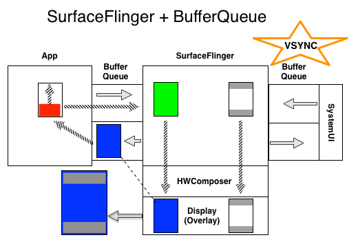
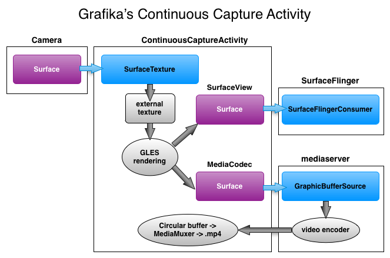

Android图形系统架构（译于2014年7月）
译自：http://source.android.com/devices/graphics/architecture.html 这是2014年针对KitKat版本的文章，比较老了，请看新版的吧（2017年6月份翻译的）。
<!-- toc -->
- BufferQueue 和 gralloc
- SurfaceFlinger 和 Hardware Composer
- Surface 和 SurfaceHolder
- EGLSurface 和 OpenGL ES
- SurfaceView 和 GLSurfaceView
- SurfaceTexture
- TextureView
- 结论
- 附录 a：
- 附录 b： SurfaceView 和 Activity 的生命周期
- 附录 c： 用 systrace 跟踪 BufferQueue
<!-- tocstop -->
每个开发人员应该知道Surface、 SurfaceHolder、 EGLSurface、 SurfaceView、 GLSurfaceView、 SurfaceTexture、 TextureView 和 SurfaceFlinger。
本文档描述Android系统的"系统级"图形架构的基本要素，以及应用程序框架和多媒体系统如何使用它。重点是图形数据buffer如何在系统中移动。如果你想知道 为什么SurfaceView 和 TextureView 如此行事，或Surface和 EGLSurface 如何进行交互，你来到了正确的地方。
你应该对Android 设备及其应用程序开发有一些了解。你不需要了解应用程序框架的详细的知识，只有很少的 API 调用会在这里被提及，但此处的材料并不重叠太多的其他公开文件。这里的目标是让你对要输出的帧的渲染所相关的一些重要事件有感知，以便让你能在设计应用程序时作出明智的选择。要实现这一目标，我们从下到上描述UI 类是如何的工作的，而不是如何使用它们。
前面的的几节包含背景材料，是后面的部分的铺垫，所以比较明智的是从头读到尾，而不是跳到听起来很有趣的一段。我们从安卓的图形Buffer的解释开始、然后描述组合（compose）和和显示机制，然后进行的更高层次的机制：为compositer提供数据。
本文档主要关注Android 4.4 （"KitKat"）系统。较早版本的系统工作原理不同，未来的版本也可能会不同。特定于版本的功能会在少数几个地方提到。
在几个地方我引用的源码来自AOSP或 Grafika 。Grafika 是一个谷歌的用于测试的开源项目；它位于https://github.com/google/grafika。相对于实实在在的示例代码，它更能"快速 hack"，但它就够了。
BufferQueue 和 gralloc
要了解 Android 的图形系统是如何工作，我们必须从表面的背后开始。在安卓系统一切图形的核心，是BufferQueue类。它的作用是足够简单： 连接生成图形数据缓冲区的东西("生产者")到接受数据进行显示或进一步处理的东西 ("消费者"）。生产者和消费者可以生活在不同的进程。几乎一切移动图形化数据缓冲区通过系统的东西依赖于 BufferQueue。
基本用法非常简单。生产者请求空闲的缓冲区 （dequeueBuffer()），指定一组特征包括宽度、 高度、 像素格式和使用标志。生产者填充缓冲区，并将其返回到队列 （queueBuffer()）。一些时间后，消费者获得缓冲区 (acquireBuffer())，并使用的缓冲区中的内容。消费者完成后，它返回缓冲区到队列 （releaseBuffer())。
最新的 Android 设备支持"同步框架"。这允许系统结合可以异步操作图形数据的硬件组件做一些俏皮的事。例如，生产者可以提交一系列的 OpenGL ES 的绘图命令，然后把输出缓冲区在渲染完成之前排入队列。缓冲区关联着fence（保护带），当内容准备好时，fence会发出信号。当缓冲区返回到空闲列表时，也会有个fence关联，这样，消费者可以在缓冲区内容仍在使用时释放缓冲区。这种方法在系统内移动缓冲区时提高了延迟和吞吐量。
缓冲区队列的一些特征，比如它可以容纳的缓冲区的最大数目，是由生产者和消费者共同确定的。
BufferQueue 负责分配缓冲区。除非特征变化，缓冲区将被保留；例如，如果生产者开始请求不同大小的缓冲区，老的缓冲区将会被释放。新的缓冲区将按要求的大小被分配。
BufferQueue数据结构是目前总是由消费者创建和"拥有"。在安卓 4.3 ，只有生产者是"binderized"，即生产者可能是在一个远程进程中，但消费者不得不是在创建队列时所在的进程。4.4 有了一点进化，走向一个更普遍的实现。
BufferQueue 永远不会复制缓冲区中的内容，移动那么多的数据将会非常低效。相反，缓冲区始终通过句柄来传递。
gralloc HAL
实际的缓冲区分配都通过一个叫做"gralloc"的缓冲区分配器执行的，gralloc的实现是通过一个vendor specific的 HAL接口（参见hardware/libhardware/include/hardware/gralloc.h）。alloc()函数使用你期望的参数 — — 宽度、 高度、 像素格式 — — 一套使用标志。这些标志是值得更多的关注。
Gralloc 分配器分配的不仅仅本机堆（heap）上分配内存的另一个途径。在某些情况下，所分配的内存可能不是cache-coherent，或可能是完全无法从用户空间访问。分配的性质取决于使用的标志，其中包括属性，比如：
* 从软件 (CPU) 访问内存的频度
* 从硬件 (GPU) 访问内存的频度
* 会否作为 OpenGL ES （"GLES"） 纹理
* 是否被视频编码器使用
例如，如果您的格式指定为RGBA 8888的像素，并且您指示缓冲区将从软件访问--这意味着您的应用程序将直接触摸像素 — — 分配器将分配一个缓冲区，每个像素需要 4 个字节，按R-G-B-A顺序。如果相反，你说该缓冲区将作为GLES纹理，只能从硬件（GPU）访问，分配器可以做GLES驱动程序期望其做的任何事情 — — BGRA 顺序，非线形"swizzled"布局，替代颜色格式，等。允许硬件使用其喜欢的格式可以提高性能。
在某些平台上，不能组合一些值。例如，"视频编码器"标志可能需要以YUV 像素为单位，因此添加"软件访问"并指定 RGBA 8888标志会失败。
Gralloc 分配器返回的句柄可以通过Binder在进程之间传递。
SurfaceFlinger 和 Hardware Composer
有了图形化数据缓冲区是美好的，但当你看到他们显示在您的设备的屏幕上时，生活就更美好了。该 SurfaceFlinger 和 Hardware Composer HAL登场了。
SurfaceFlinger 的作用是接受来自多个来源的缓冲区，组合它们，并将它们发送到显示。以前，是软件把他们传送到硬件缓冲器 （例如/dev/graphics/fb0），但那些日子一去不复返了。
当一个应用程序走到前台，WindowManager 服务要求 SurfaceFlinger 绘图surface。SurfaceFlinger 创建"图层"— — 最主要的东西就是 BufferQueue-- SurfaceFlinger 充当消费者。生产者需要的Binder对象通过 WindowManager 传递到该应用程序，应用程序就可以开始直接向 SurfaceFlinger 发送帧。（注： WindowManager 使用术语"窗口"，而不是"图层"的"，因为"图层"意味着别的东西。我们要使用 SurfaceFlinger 的术语。你也可以认为 SurfaceFlinger 真正应该被称为 LayerFlinger)。
对于大多数应用程序，在任何时间都会有三层屏幕： 在屏幕顶部的"状态栏"，在底部或侧面的"导航栏"，和应用程序的 UI。一些应用程序将会有更多或更少层，例如默认首页的应用程序具有单独的壁纸图层，全屏游戏可能会隐藏状态栏。每个图层可以被单独更新。状态栏和导航栏由系统进程产生，应用图层由应用程序层产生，他们之间没有协调。
设备以一定的速率刷新显示，手机和平板电脑通常是 60 帧每秒。如果在刷新时显示内容，"撕裂"将可见 ；所以在更新周期之间去更新内容是非常重要的。当可以安全更新时，系统从显示接收信号。由于历史的原因我们会称之为VSYNC（垂直同步信号）。 刷新率随着时间的推移可能会发生变化，例如某些移动设备基于当前的条件，刷新率范围从 58 至 62 fps。HDMI 连接电视，这可以从理论上达到 24 或 48 Hz，以适应相匹配的视频。因为我们每个刷新周期只可以更新屏幕一次，提交 200 帧/秒显示的缓冲区将是巨大的浪费，因为大部分的帧将永远不会显示。SurfaceFlinger不是每当一个应用程序提交缓冲区就采取行动，而是在显示器准备接收新的东西时醒来。
VSYNC信号到达时，SurfaceFlinger 扫描图层列表以寻找新缓冲区列表。如果它发现一个新的，它获得它 ；如果不是，它将继续使用以前获取的缓冲区。SurfaceFlinger 总是想要有一些东西去显示，所以它将会挂到一个缓冲区。如果图层从来没有缓冲区提交过，该图层将被忽略。
一旦 SurfaceFlinger 已收集所有可见图层的缓冲区，它询问Hardware Composer如何组合这些图层。 Hardware ComposerHardware Composer HAL （"HWC"） 首先在 Android 3.0 （"Honeycomb"）中出现，在过去的几年稳步发展。其主要目的是利用现有的硬件确定最有效的方式对缓冲区进行组合。作为一个 HAL，它的实现取决于设备，通常是显示硬件OEM实现的。
当你考虑"叠加平面"时，就很容易认识到这种方法的价值。"叠加平面"的目的是一起组合多个缓冲区，但是是在显示硬件里，而不是 GPU。例如，假设您有一种典型的 纵向方向的Android 手机，状态栏在顶部，导航栏在底部，其他地方是应用程序内容。每个图层的内容是在单独的缓冲区中。您可以使用一个随机的到空闲缓冲区，先在里面渲染应用程序的内容，然后在它上面渲染状态栏，最上面渲染导航栏。或者，您可以将所有三个缓冲区传递给显示硬件，并告诉它从不同缓冲区中读取数据，显示在屏幕的不同部分。后者的方法可以明显提高效率。
也许你能想到，不同的显示处理器，能力相差很大。层数、 是否可以旋转或混合、定位和重叠的限制，这些很难通过一个 API 来表达。所以，HAL是这样工作的：
1. SurfaceFlinger 给HWC提供完整列表的图层，并问，"你想怎么想处理这些?"
2. HWC的响应是为每个图层标记为"叠加"或"GLES 组合"。
3. SurfaceFlinger 负责所有的"GLES 组合"，将输出缓冲区传递到HWC，剩下的事情HWC负责处理。
硬件供应商负责自定义定制决策代码，这样可以发挥每个设备的最佳性能。
当屏幕上没有任何变化时，"叠加平面"可能不如"GL 组合"的效率高。特别是当覆盖内容有透明的像素，重叠的图层混合在一起时。在这种情况下，HWC可以为一些或所有图层选择请求"GLES 组合"，并保留组合好的缓冲区。如果 SurfaceFlinger 再次要求组合相同的缓冲区，HWC可以只是继续显示以前复合好的缓冲区。这可以提高闲置设备的电池寿命。
搭载 Android 4.4 （"KitKat"）的设备通常通常支持四个覆盖面。尝试组合更多的层将导致系统使用"GLES 组合"来组合一些 层。这样应用程序使用的层数会对功耗和性能造成重大的影响。
你可以看看 SurfaceFlinger到底什么，使用命令adb shell dumpsys SurfaceFlinger。输出是冗长的。与我们当前的讨论最相关的部分是显示在输出的底部的HWC摘要：
type | source crop | frame name
--------+-----------------------------------+--------------------------------
HWC | [ 0.0, 0.0, 320.0, 240.0] | [ 48, 411, 1032, 1149] SurfaceView
HWC | [ 0.0, 75.0, 1080.0, 1776.0] | [ 0, 75, 1080, 1776] com.android.grafika/com.android.grafika.PlayMovieSurfaceActivity
HWC | [ 0.0, 0.0, 1080.0, 75.0] | [ 0, 0, 1080, 75] StatusBar
HWC | [ 0.0, 0.0, 1080.0, 144.0] | [ 0, 1776, 1080, 1920] NavigationBar
FB TARGET | [ 0.0, 0.0, 1080.0, 1920.0] | [ 0, 0, 1080, 1920] HWC_FRAMEBUFFER_TARGET
这会告诉你哪些图层是在屏幕上，它们是否正在作为叠加 （"HWC"） 或 OpenGL ES 组合 （"GLES"）处理的。该命令也会给你很多你可能并不会在意的事实（"句柄"和"提示"和"旗帜"和其他我们已经修剪出上述片段的东西）。"源剪切（source crop）"和"帧"的值将会在稍后讨论地更详细。
FB_TARGET 层是"GLES 组合"输出的去向。由于上面所示的所有图层使用的是"叠加"，FB_TARGET其实在在此帧中没用。图层的名称指示了它原来的角色。 使用/dev/graphics/fb0和没有叠加功能的设备上的所有组合都将会是"GLES 组合"，输出将写到帧缓冲器。最新的设备上，通常都没有简单的帧缓冲器，所以 FB_TARGET 层是随机的缓冲区。（注： 这是为什么为老版本的 Android写的屏幕采集程序在新版本上无法工作： 他们试图读取帧缓冲区，但那里其实没东西了.)
"叠加平面"有另一个重要角色： 他们是显示 DRM 内容的唯一方式。SurfaceFlinger 和GLES驱动程序不能访问受 DRM 保护的缓冲区，这意味如果HWC切换到"GLES 组合"，您的视频将会消失。
三重缓冲的需要
为了避免图像撕裂在显示器上，系统需要双缓冲： 前台缓冲区用于显示，后台缓冲区用于准备数据。VSYNC到达后，如果后台缓冲区是准备好了，你快速切换它们。这在你直接写数据到帧缓冲器时，系统工作相当不错。但现在多了一步组合，这就出毛病了。由于 SurfaceFlinger 触发的方式，我们双缓冲的管道会有问题。
假设帧 N正在被显示，N + 1 帧已经被 SurfaceFlinger获取，以在下 VSYNC 上显示。（假定帧N是通过“叠加”的方式组合，所以我们不能改变缓冲区中的内容，直到显示用完它）。当 VSYNC 到达时，HWC翻转缓冲区。同时应用程序开始将N+2帧 的内容渲染到帧N的缓冲区，SurfaceFlinger 扫描图层列表中，查找更新。SurfaceFlinger 不会发现任何新的缓冲区，因此它准备下一个VSYNC后再显示 N + 1 帧。稍后，应用程序完成渲染帧 N + 2 和并把它排队给 SurfaceFlinger，但太晚了。这已地把我们的最大帧率减半。
我们可以用三重缓冲解决这个问题。VSYNC之前，帧 N正在被显示、 N + 1 帧已经复合 （或预定为一个“叠加”），是准备好了要显示，和帧 N + 2已经排队，准备让SurfaceFlinger 获得。当屏幕翻转时，缓冲区平滑地转到不同的状态。应用程序只有少于一个完整 VSYNC 时期 （16.7ms 在 60 fps） 去做它的渲染和排队。SurfaceFlinger / HWC在下个翻转之前有完整的VSYNC周期来组合。缺点是应用程序的任何东西，出现在屏幕上，至少需要两个 VSYNC 周期之后。随着延迟的增加，该设备对触摸输入的反应慢。

图 1.SurfaceFlinger + BufferQueue 上图描述了 SurfaceFlinger 和 BufferQueue 的流动。在帧：
1. 红色缓冲区填满，然后排入 BufferQueue
2. 红色缓冲区离开应用程序后，蓝色的缓冲区进入，取代红色缓冲区
3. 绿色缓冲区和 systemUI * 影子进入HWC （图示SurfaceFlinger 仍然具有缓冲区，但现在HWC已经为他们准备好在下次vsync时通过叠加进行显示）。
蓝色的缓冲区会被显示和 BufferQueue 引用。在与它关联的fence发出信号前，应用程序能使用它。 VSYNC发生后，下面步骤立即发生：
* 红色缓冲区跃迁到 SurfaceFlinger，替换绿色缓冲区
* 绿色缓冲区跃迁到显示，替换蓝色缓冲区和虚线绿色双出现在 BufferQueue
* 与蓝色缓冲区关联的fence发出信号，app清空里面的内容* *
* 显示范围从< 蓝 + SystemUI > 更改到 < 绿色 + SystemUI >
*-UI 系统进程提供状态栏和导航栏，就在这里而言，并不改变，所以 SurfaceFlinger 保持使用先前取得的缓冲区。在实践中会有两个单独的缓冲区，一个用于在顶部的状态栏，另一个用于底部的导航栏，他们将依据内容调整大小。每个都将到达它自己的 BufferQueue。
**-该缓冲区实际上不会"清空"；如果你没有在它上面绘制就提交它，你会得到同样的“蓝”。"清空"是清除缓冲区中的内容，应用程序应该做在它开始绘图之前"清空"。
注意到层组合不需要完整的垂直同步周期，我们可以缩短延迟。如果组成方式是“叠加”，时间基本上是零 CPU 和 GPU。但我们不能指望它，所以我们需要一点时间。如果应用程序在VSYNC之间渲染完成一半，SurfaceFlinger将HWC setup推迟到下个VSYNC信号几毫秒之前，我们可以把延迟从 2 帧削减到也许 1.5。理论上，在你可以把渲染的和组合完成在单个周期内，回归到双缓冲 ；但在当前设备上很难实现。渲染和组合的时间的轻微的波动，从“叠加”切换到"GLES 组合"，都可以使我们错过交换的截止时间而不得不重复前一帧。
SurfaceFlinger 的缓冲区处理说明了前面提到的基于fence的缓冲区管理。如果我们以全速进行动画处理，我们需要有获得用于显示的缓冲区 （"前台") 和用于下一个翻转的缓冲区的 （"后台"）。如果我们要基于“叠加”显示缓冲区，显示设备将直接访问缓冲区内容并不能改动。但如果你看看在dumpsys SurfaceFlinger输出结果中的现用图层的 BufferQueue 状态，你会看到一个获得的缓冲区，一个排队的缓冲区和一个可用的缓冲区。这是因为，当 SurfaceFlinger 获得了新的"后台"缓冲区，它会释放"前台"缓冲区到队列。"前台"缓冲区是显示设备仍在使用的，因此任何dequeue它的应用程序必须等待fnece发出信号才能继续在它上面绘制。因此，只要每个人都遵循fence规则，队列管理 IPC 请求可以与显示平行发生。
虚拟显示
SurfaceFlinger 支持一个"主"的显示，即您的手机或平板电脑上的显示，和"外部"的显示，如通过 HDMI 和电视连接在一起。它还支持大量的"虚拟"的显示，使组合输出结果可在系统内获得。虚拟显示可以用于屏幕录像或通过网络发送。
虚拟显示可能会有和主显示 （"层堆栈"） 相同的图层集，或有它自己的一套。虚拟显示没有VSYNC，所以主显示器的VSYNC用来触发所有显示的组合活动。
在过去，虚拟显示都是通过GLES来组合。hardware composer 只负责主显示器的组合。在 Android 4.4 , hardware composer 有能力参与虚拟显示组合。
正如你可能期望，虚拟显示生成的帧将被写入到 BufferQueue。
案例研究： screenrecord
现在，我们已经有了关于 BufferQueue 和 SurfaceFlinger 一些背景知识，我们来看一个实际的使用情况。
Screenrecord 命令 出现在 Android 4.4，允许您记录屏幕上出现的一切生成一个.mp4 文件存在磁盘上。要实现这一点，我们从 SurfaceFlinger 接收复合帧，将它们写入视频编码器，然后将已编码的视频数据写入一个文件。视频编解码器是由一个单独的进程 — — 称为"媒体服务器"— —管理， 所以我们要在系统中移动大量的图形缓冲区。要使它更具挑战性，我们试图记录 60 fps 全分辨率的视频。使这项工作有效运转的关键是 BufferQueue。
MediaCodec 类允许应用程序提供的数据为缓冲区中的原始字节，或通过一个surface。我们将在后面讨论surface的更多的细节，但现在只是认为它是结束于 BufferQueue 的生产者的封装。当 screenrecord 请求访问视频编码器时，媒体服务器创建 BufferQueue 并连接自身到消费者一方，然后把生产者一方作为一个suface传递回 screenrecord。
Screenrecord 命令然后请求 SurfaceFlinger 创建镜像主显示器的虚拟显示（即具有所有相同的图层），指示它将输出发送到来自媒体服务器的surface。请注意，在这种情况下，SurfaceFlinger 是缓冲区的生产者，而不是消费者。
一旦配置完成，screenrecord 可以坐着等编码好的数据的出现。当应用程序绘制时，其缓冲区前往 SurfaceFlinger，SurfaceFlinger将他们组合到一个单一的缓冲区，并把它直接发送到媒体服务器中的视频编码器。所有的帧数据甚至从来没有没被 screenrecord 看到。在内部，媒体服务器用它自己的方式移动缓冲区，它也是通过句柄传递数据，以尽量减少系统开销。
案例研究： 模拟辅助显示器
WindowManager 可以请求 SurfaceFlinger 创建一个可见图层， SurfaceFlinger 将作为 BufferQueue 的消费者。它也是可能要求 SurfaceFlinger 创建一个虚拟的显示，SurfaceFlinger 将作为 BufferQueue 生产者。如果你连接它们，将虚拟显示渲染到可见图层，将会发生什么？ 您创建一个封闭的循环，组合好的屏幕出现在一个窗口中。当然，该窗口现在也是组合输出的一部分，等在下次刷新时，窗口内的组合图像也将显示窗口的内容。这一路下来的海龟。你可以在这里实际看到，在设置中启用"开发人员选项"，选择"模拟辅助显示"，这将启动一个窗口。给你点额外的奖金，使用 screenrecord 捕获启用显示的过程，然后一帧一帧的回放。
Surface 和 SurfaceHolder
自1.0 以来，surface类就是公开 API 的一部分。它的描述只是说，"由屏幕组合器管理的原始缓冲区的句柄“。该语句在最初写的时候是准确的，但在现代系统上，该描述是不足够的。
Surface 表示缓冲队列的生产者方，缓冲队列由 SurfaceFlinger 经常（但不是总是 ！）消费。当你渲染在Surface上时，结果最终会在缓冲区，缓冲区将被运到消费者。Surface不仅仅是简单的你可以在上面乱涂乱画的一原始块内存。
显示Surface的 BufferQueue 通常配置为三倍缓冲 ；但缓冲区是按需求分配的。因此如果生产者生成缓冲区足够慢 — — 也许它在 60 fps 的显示器上按 30 fps运动 — — 可能缓冲区队列中那里只有两个分配的缓冲区。这将有助于尽量减少内存消耗。您可以看到在dumpsys SurfaceFlinger的输出中看到与每一图层相关联的缓冲区的摘要信息。
Canvas 渲染
很久以前，所有的渲染在软件中完成，你今天仍然可以这样做。底层的实现是由 Skia 图形库提供的。如果你想要绘制一个矩形，您使一个库调用，它适当地设置在缓冲区中的字节。为了确保缓冲区不是由两个客户端同时更新，或在显示的时候写入数据，你必须先 lock 要访问的缓冲区。lockCanvas()锁定缓冲区，并返回一个 Canvas 用于绘图，使用 unlockCanvasAndPost()解锁缓冲区，并将它发送给组合器。
随着时间的推移，具有通用 3D 引擎的设备出现了。安卓系统围绕 OpenGL ES 调整了方向。然而，对于应用程序以及应用程序框架代码，保持老的 API 能继续工作是非常重要的，所以花了一些功夫用硬件加速Canvas API。你可以看到硬件加速网页上的图表，这是有点波折的路。特别要注意到，虽然Canvas向View提供的的onDraw()方法可能是硬件加速的，应用程序锁通过lockCanvas()锁定Surface来获得的Canvas从来都不是硬件加速的。
当你锁定一个Surface为Canvas进行访问时，"CPU 渲染器"连接到 BufferQueue 生产者方，并不会断开连接，直到Surface被销毁。大多数的其他生产者（就像 GLES）可以断开连接，并重新连接到Surface。但基于Canvas的"CPU 渲染器"不能。这意味着如果你已经把Surface锁定为Canvas，您不能在Surface上用GLES绘画，或是把来自视频解码器的帧发给它。
生产者首次从 BufferQueue 请求缓冲区，分配的缓冲区将被初始化为零。初始化是必需的，用于避免进程间无意数据的共享。然而，当你重新使用一个缓冲区时，以前的内容仍将存在。如果多次调用lockCanvas()和unlockCanvasAndPost()并没有绘制任何内容，您会在先前渲染完的帧之间循环。
Surface锁定/解锁代码保持对先前渲染好的缓冲区的引用。如果您在锁定Surface时指定一个dirty的区域，它将从以前的缓冲区复制非dirty的像素。很有可能，该缓冲区将由 SurfaceFlinger 或 HWC 处理，但由于我们只是需要从它读取数据，所以无需等待的独占访问权。
如果应用程序不是用 Canvas 方式在 Surface 上直接绘制，那么主要方式是通过 OpenGL ES。这在 EGLSurface 和 OpenGL ES节描述。
SurfaceHolder
和 Surface 工作的有些事情想要 SurfaceHolder（著名的是 SurfaceView）。最初的想法是 Surface 代表原始的、组合器管理的缓冲区，而 SurfaceHolder 由应用程序管理，保持跟踪更高级别的信息，如尺寸和格式。Java 语言的定义，是底层native实现的镜像。你也可以说是不再需要这样拆分，但它一直是公共 API 的一部分。
一般来说，任何与view相关的事情将涉及 SurfaceHolder。一些其他的 API，如 MediaCodec，将在Surface本身上操作。你可以从 SurfaceHolder 很容易得到Surface，所以有了 SurfaceHolder， 就挂到它。
用来获取和设置 Surface 参数（如大小和格式）的API ，通过 SurfaceHolder 来实现。
EGLSurface 和 OpenGL ES
OpenGL ES 定义了用于渲染图形的 API。它不定义视窗系统。为了让 GLES 工作在多种平台上，它需要结合另外一个库进行工作。这个库知道如何通过操作系统创建和访问视窗。在 android 中使用的这个库叫 EGL。如果您想要绘制带纹理的多边形，则使用GLES调用；如果你想要把你的渲染绘制在屏幕上，你需要使用 EGL调用。
你可以做任何与GLES相关的事情之前，您需要创建一个 GL 上下文。在 EGL，这意味着要创建 EGLContext 和 EGLSurface。GLES 操作适用于当前的上下文，上下文是通过线程本地存储区访问的，而不是作为参数传来传去的。这意味着你必须要小心：渲染代码是在哪个线程上执行的，在该线程上的当前上下文是哪个。 EGLSurface 可以是 EGL 分配的离屏缓冲区 （称为"pbuffer"），或是由操作系统分配的一个窗口。EGL 窗口 Surface 通过 eglCreateWindowSurface()调用创建。它使用"窗口对象"作为参数，"窗口对象"在 Android 上 可以是 SurfaceView、 SurfaceTexture、 SurfaceHolder 或 Surface — — 所有这些的下面都是 BufferQueue。当你发出该调用时，EGL 创建一个新的 EGLSurface 对象，并将它连接到窗口对象的 BufferQueue 的生产者接口。从那时起，渲染到 EGLSurface 的结果是一个缓冲区被出列，渲染成，并排队等待消费者使用。（"窗口"一词是表面了预期的用处，但记住，输出可能不是注定要在显示器上显示的）。
EGL 不提供锁定/解锁的调用。相反，你发出的绘图命令，然后调用eglSwapBuffers()来提交当前帧。eglSwapBuffers()的名称来自于传统的前后台缓冲区的交换，但是真正的实现可能非常不同。 一次只有一个 EGLSurface 可以与Surface关联 — — 你可以只有一个生产者连接到 BufferQueue --但如果你销毁 EGLSurface，它将断开与 BufferQueue 的连接，允许其他的东西去连接。 给定的线程可以通过改变"current"切换多个 EGLSurfaces。EGLSurface 在一段时间只能是一个线程的“current”。
对 EGLSurface 最常见的错误理解是认为它是 Surface的 另一个方面（就像 SurfaceHolder）。它是相关的、但独立的概念。你可以在EGLSurface上画画，但它不是由 Surface 支撑的。你也可以使用一个没有 EGL 的 Surface。EGLSurface 只是给 GLES 画画的地方。
ANativeWindow
公共 Surface 类是在 Java 编程语言中实现。在C/c + + 中的对等的是 ANativeWindow 类，由Android NDK半暴露。通过 ANativeWindow_fromSurface()调用，你可以从一个Surface 得到 ANativeWindow。然后就像其 Java 语言的表弟，你可以锁定它，在软件中渲染它，然后把它解锁并发送。
若要从 native 代码创建 EGL 窗口 surface，你需要将 EGLNativeWindowType 的实例传递给eglCreateWindowSurface()。EGLNativeWindowType 是 ANativeWindow 的一个同义词，所以你可以自由将它们相互转换（cast）。
基本的"native窗口"类型只是 BufferQueue 生产者侧的封装，这个事实你不应该感到惊讶吧。
SurfaceView 和 GLSurfaceView
现在，我们已经探索了低层次的组件，该是来看看他们是如何适应更高级别的组件了，因为应用程序是在更高级别的组件上组建的。
安卓应用程序框架的 UI 基于从View开始的层次结构的对象。大部分细节在这里讨论并不重要，但下面的理解是有助的：UI 元素通过一个复杂的度量和布局过程以把它们放入一个矩形区域。当应用程序被带到前台时，所有可见的 View 对象被渲染到一个 SurfaceFlinger 创建的 Surface，该Surface是由 WindowManager 设置的。布局和渲染都在应用程序的 UI 线程上执行。
无论多少的布局与你有的意见，一切获取呈现到一个缓冲区。这是真实的意见，无论是硬件加速。
和其他 View 一样，SurfaceView 接收同样的参数，因此您可以给它位置和大小，和把其他元素放在它周围。然而，当渲染的时候，内容是完全透明的。SurfaceView 的 View 部分只是一个透明占位符（placeholder）。
SurfaceView 的 View 组件将要变得可见时，框架让 WindowManager 请求 SurfaceFlinger 来创建一个新的 Surface。（这不是同步发生的，这就是为什么你应该提供一个回调，当 Surface 创建完成时通知您。）默认情况下，新的 Surface 被放置应用程序 UI Surface 的后面，但你可以重写默认的"Z order"，以把 Surface 放在上面。
无论你渲染什么到此Surface，Surface将由 SurfaceFlinger 进行组合，而不是由该应用程序。这是 SurfaceView 真正强大的地方：你得到的Surface 可以由一个单独的线程或一个单独的进程进行渲染，和应用程序的 UI 渲染完全独立，缓冲区将直接转到 SurfaceFlinger。你不能完全忽略 UI 线程 — — 你仍需要与 Activity 的命周期进行协调，并且，你可能需要调整一些东西，如果View的尺寸或位置发生了变化 — — 但你有仍拥有该Surface的全部，和该应用程序的UI以及其他图层进行混合是由Hardware Composer 进行处理的。
值得要注意是这种新的Surface是BufferQueue的生产者侧，BufferQueue 的消费者是 SurfaceFlinger 层。你可以用任何可以 feed 给 BufferQueue 的方式更新 Surface。你可以： 使用Surface提供Canvas功能、 附加 EGLSurface 并用GLES进行绘制、配置 MediaCodec 视频解码器对其进行写入。
组合和硬件缩放器
现在，我们有更多的概念。我们再回头去看看较早前跳过了的dumpsys SurfaceFlinger中的几个字段，这对我们是有用的。回到 Hardware Composer 讨论中，我们看到了一些像这样的输出：
type | source crop | frame name
- ------+-----------------------------------+--------------------------------
HWC | [ 0.0, 0.0, 320.0, 240.0] | [ 48, 411, 1032, 1149] SurfaceView
HWC | [ 0.0, 75.0, 1080.0, 1776.0] | [ 0, 75, 1080, 1776] com.android.grafika/com.android.grafika.PlayMovieSurfaceActivity
HWC | [ 0.0, 0.0, 1080.0, 75.0] | [ 0, 0, 1080, 75] StatusBar
HWC | [ 0.0, 0.0, 1080.0, 144.0] | [ 0, 1776, 1080, 1920] NavigationBar
FB TARGET | [ 0.0, 0.0, 1080.0, 1920.0] | [ 0, 0, 1080, 1920] HWC_FRAMEBUFFER_TARGET
这输出是在Nexus 5 在纵向方向用Grafika 的"播放视频 (SurfaceView)" Activity 播放一部电影时得到的。请注意，该列表是从后面到前面排序的：SurfaceView 的 Surface 是在后面，应用程序 UI 层在其之上。然后是状态栏和导航栏。这个视频是 QVGA (320 x 240）格式的。
"source crop" 说明的是 Surface 的缓冲区中要被 SurfaceFlinger 显示的部分。应用程序 UI 的 Surface 等于显示器的全尺寸 (1080 x 1920），但没有要和状态栏和导航栏混合的像素需要渲染和合成，所以 source 被裁剪为一个矩形，从离顶部75 像素开始，结束于离底部144像素。状态栏和导航栏有更小的 Surface，"source crop" 描述从矩形的左上角 (0，0)开始并跨越他们的内容。
“frame" 是矩形像素最终在显示器的哪里显示。应用程序 UI，“frame” 和 "source crop" 相符，这是因为我们要把和显示器一样大小图层的一部分复制 （或覆盖）到另一个显示器大小的图层的同一位置。对于状态栏和导航栏，”frame“ 和 "source crop" 矩形的大小是一样的，但位置进行了调整，这样的导航栏将出现在屏幕的底部。
现在考虑标记为"SurfaceView"、包含视频内容的图层。"source crop"匹配的视频的大小，SurfaceFlinger 知道视频的大小是因为 MediaCodec 解码器 （缓冲区生产者） 是用该大小去 dequeue 缓冲区的。”frame“ 矩形有一个完全不同的大小 — — 984 x 738。
SurfaceFlinger 处理大小的差异是通过缩放缓冲区中的内容去填充“frame”矩形，根据需要进行放大或缩小。这个特定的大小选择是因为它和视频有相同的高宽比 （4： 3），并且是尽可能地宽，但受 View 布局的约束（其中包括一些为审美原因在屏幕边缘的填充） 。
如果你在同一 Surface 上开始播放不同的视频，底层 BufferQueue 会自动重新分配新的大小的缓冲区， SurfaceFlinger 将调整"source crop"。如果新视频的长宽比是不同的，应用程序需要强制 View 重 新布局以适应新视频，这样 WindowManager 将告诉 SurfaceFlinger 去更新 ”frame“ 矩形。
如果您通过一些其他手段去渲染 Surface，也许GLES，你可以使用SurfaceHolder#setFixedSize()调用来设置 Surface 的大小。例如，你可以配置一个游戏总是按 1280 x 720 渲染，这将大大降低需要处理像素数，相对于 2560 × 1440 平板电脑或 4 K 电视的屏幕上的每个像素都需要处理来讲。显示处理器会处理缩放。如果你不想让你的游戏有黑边框，您可以通过设置大小来调整游戏中的高宽比，比如设置窄边是 720 像素，但长的边设置成保持物理显示的宽高比（例如 1152 x 720 以匹配 2560 x 1600 显示） 。一个使用该方法的例子是 Grafika 的"hardware scaler exciser ” activity。
GLSurfaceView
GLSurfaceView 类提供一些帮助类用于管理 EGL 上下文、线程间的通信、和Activity的生命周期交互。就这些，你不需要使用 GLSurfaceView 来使用 GLES。
例如，GLSurfaceView 创建了一个线程进行渲染，并配置了 EGL 上下文。当 Activity 暂停时，状态被自动清理。大部分的应用程序不需要知道任何关于 EGL 的事情，就可以和 GLSurfaceView 一起使用 GLES。
在大多数情况下，GLSurfaceView 是很有帮助，可以让 GLES 更容易工作。在某些情况下，用这种方式却有麻烦。如果它有用，就使用它，否则不要使用它。
SurfaceTexture
SurfaceTexture 类是一个相对比较新的类，在 Android 3.0 （"HoneyComb"）增加的。正如 SurfaceView 是 Surface 和 View 的组合，SurfaceTexture 是一个Surface和 GLES 纹理的结合。差不多是。
当您创建的 SurfaceTexture 时，您创建了一个BufferQueue，你的应用程序是消费者 。当一个新的缓冲区由生产者排入队列时。通过回调 （onFrameAvailable()） 通知您的应用程序。您的应用程序调用 updateTexImage()，释放先前拥有的缓冲区，从队列中获取新的缓冲区，并调用一些 EGL调用，以使缓冲区作为"外部"的纹理可被 GLES 使用。
外部纹理 （GL_TEXTURE_EXTERNAL_OES） 和由GLES 创建的纹理 (GL_TEXTURE_2D) 不完全一样。配置渲染器稍有不同，并且有些事情还不能做。但关键的一点是这： 你可以从 BufferQueue 收到的数据直接渲染纹理的多边形。
你可能想知道如何保证缓冲区中数据的格式是 GLES 能认识到的东西 — — gralloc 支持多种格式。在 SurfaceTexture 创建 BufferQueue 时，它将消费者的使用标志设置为GRALLOC_USAGE_HW_TEXTURE, 确保任何 gralloc 创建的缓冲区能被 GLES 使用。
因为 SurfaceTexture 与 EGL 上下文进行交互，你必须要小心，从正确的线程调用它的方法。这是在类文档中明确描述的。 如果你深入类的文档，您将看到了两个奇怪的调用。一个检索时间戳，另一个是转换矩阵，每个值都是被前面的 updateTexImage()调用设置的。原来 BufferQueue 向消费者传递不仅仅只是一个缓冲区句柄。每个缓冲区伴随着一个时间戳和转换参数。
提供转换参数是为了效率。在某些情况下，对于消费者来说，源数据可能会在"错误的"方向上；但不是在发送数据之前进行旋转，我们可以发送其当前的方向的数据、以及纠正它的变换矩阵。在数据被使用的时候，变换矩阵可以与其他变换合并，以尽量减少系统开销。
对于某些缓冲区来源，时间戳是有用的。例如，假设您把生产者接口连接到相机的输出（ setPreviewTexture()）。如果你想要创建一个视频，您需要设置每个帧的出现时间戳；但是你想要的是当帧被捕获时的时间，而不是您的应用程序收到缓冲区的时间。与缓冲区相关的时间戳，由相机代码设置，这样，时间戳就更一致。
SurfaceTexture 和 Surface
如果仔细查看 API，您将看到应用程序创建一个普通 Surface 的唯一途径是通过采用 SurfaceTexture 作为唯一参数的构造函数。（在 API 11 之前，没有公共构造函数用于 Surface ）。这看起来似乎有点落后，如果你把 SurfaceTexture 作为 Surface 和纹理的组合。
在内部，SurfaceTexture 被称为 GLConsumer，这更准确地反映了其作为 BufferQueue 的所有者和消费者的角色。当你从 SurfaceTexture 创建一个 Surface 时，你在创建了一个 SurfaceTexture 的 BufferQueue 生产者方的对象。
案例研究： Grafika 的"Continuous Capture"
Activity相机可以提供一个帧流用于录制成一部电影。如果你想要在屏幕上显示，你创建 SurfaceView，并把 Surface 传递给setPreviewDisplay()，让生产者 （相机） 和消费者 （SurfaceFlinger） 做所有的工作。如果你想要录制视频，你用 MediaCodec 的createInputSurface()创建一个Surface，并把它传递给相机，然后你就可以坐下来并放松一下。如果你想要同时显示视频并记录，你需要做更多的工作。 "Continuous Capture" Activity 显示了从相机来的视频，同时它被记录下来。在这种情况下，编码好的视频写入缓冲区中的循环内存，这样任何时间都可以保存到磁盘上。这是很直接的实现方法，你只需了解所有的东西在哪儿。
应用程序中有三个 BufferQueues 参与。使用 SurfaceTexture 来接收从相机来的帧，将它们转换为外部的 GLES 纹理。应用程序声明了一个用于显示帧的 SurfaceView，也配置了含有 “输入Surface” 的 MediaCodec 编码器用于录像。因此，一个 BufferQueue 是由应用程序，一个由 SurfaceFlinger，和一个由媒体服务器创建的。  图 2.Grafika 的 “continuous capture” activity 在上面的图中，箭头显示从相机数据的传播。 用颜色标示了BufferQueues（紫色的是生产者，青色的是消费者）。注意："相机"其实生活在媒体服务器进程。
编码好的 H.264 视频会到应用程序进程的 RAM 中的循环的缓冲区，当"capture"按钮被点击的时候，应用程序使用 MediaMuxer 类将视频写到磁盘。
在应用程序中，所有三个 BufferQueues 的处理都在同一个 EGL 上下文，GLES 操作都在 UI 线程上执行。在 UI 线程上做 SurfaceView 渲染，通常是不鼓励的，但由于这些简单的操作由的 GLES 驱动程序异步处理，所以应该不会有大问题。（如果视频编码器被锁起来了，我们又试图出列一个缓冲区，应用程序将成为反应迟钝。但在这一点上，无论我们怎么做，都可能失败）。处理编码好的数据 — — 管理循环缓冲区和写入磁盘 — — 在一个单独的线程上执行。
大量的配置发生在 SurfaceView 的surfaceCreated()回调中：EGLContext 被创建，用于显示和视频编码器的两个 EGLSurface 被创建。一个新的帧来到的时候，我们告诉 SurfaceTexture 来获得它，并使作为 GLES 纹理可被使用，然后使它在每个 EGLSurface 上用 GLES 命令进行渲染 （从 SurfaceTexture 中转发变换参数和时间戳）。编码线程从 MediaCodec 获得编码的输出，并储存在内存中。
TextureView
TextureView 类开始出现在 Android 4.0 ("Ice Cream Sandwich"）中。它是这里讨论的最复杂的View对象，结合了View 和 SurfaceTexture。 记得 SurfaceTexture 是"GL 消费者"，消费图形数据的缓冲区，并使它们可用作为纹理使用。TextureView 封装了 SurfaceTexture，接管响应回调和获取新缓冲区的责任。新缓冲区的到来，使 TextureView 发出一个“View invalidate”的请求。当被要求画画时，TextureView 使用最近接收缓冲区的内容作为其数据源进行渲染，不论 View 状态如何指示它。
就像 SurfaceView 一样，你可以用 GLES 在 TextureView 上渲染。只需将 SurfaceTexture 传递到 EGL 窗口创建调用。但是，这样做暴露了一个潜在的问题。
我们已经看，在大部分的情况下，BufferQueues 在不同进程之间传递缓冲区。但是，当用 GLES 在 TextureView 上渲染，生产者和消费者都在同一进程中，他们甚至可能在同一个线程上运行。假设我们从 UI 线程连续快速提交几个缓冲区。EGL 缓冲区互换调用将需要从 BufferQueue 出列缓冲区，它将等待直到有一个缓冲区可用。但不会有任何缓冲区可用，除非消费者获取一个缓冲区用于渲染，但消费者也恰好在 UI 线程上......，所以我们陷入了死等。
解决办法是让 BufferQueue 确保始终有一个缓冲区可用来出列，所以缓冲区互换永远不会陷入等待。有一种方法来保证这点：当有一个新的缓冲区 enqueue 时， BufferQueue 丢弃以前排队缓冲区的内容，并应用最小缓冲区计数与最大可已 acquire 缓冲区的计数限制。（如果您的队列具有三个缓冲区，且所有三个缓冲区由消费者 acquire 了，那就没有缓冲区可用于 dequeue 了，则缓冲区交换调用必然挂起或失败。所以我们需要防止消费者一次获得两个以上的缓冲区)。删除缓冲区是通常是不可取的，所以它只使在特定情况下，例如当生产者和消费者都是在相同的进程中。
SurfaceView 或 TextureView ？
SurfaceView 和 TextureView 填补相似的角色，但有非常不同的实现。决定哪一个是最好，需要了解权衡取舍。 因为 TextureView 是 View 层次结构的一个正常的成员，它像任何其他 View 一样，可以覆盖其他元素或被其他元素覆盖。您可以用简单的 API 调用执行任意转换和把内容检索为一个位图。
TextureView 的主要挑战是组合步骤的性能。对于 SurfaceView，内容写入到一个单独的图层，由 SurfaceFlinger 进行组合，叠加是非常理想的。而对于 TextureView，View 组合始终由 GLES 执行，对其内容的更新可能会导致其他 View 元素的重绘（例如，如果它们的位置在 TextureView 之上）。该 View 渲染完成后，应用程序 UI 层必须然后与其他图层由 SurfaceFlinger 进行组合，这样每个可见像素都被组合了两次。对于一个全屏幕的视频播放程序，或任何其他的应用程序，只有 UI 元素在视频上叠加，SurfaceView 能提供更好的表现。
如前所述，受 DRM 保护的视频只可以在“叠加”面上呈现。支持保护内容的视频播放器必须用 SurfaceView 实现。
案例研究： Grafika 的播放视频 (TextureView)
Grafika 包括两个视频播放器，一个用 TextureView 实现的，另一个用 SurfaceView 实现的。视频解码部分，将从 MediaCodec 的帧发送到 Surface，两个是相同的。最有趣的它们之间的差异是呈现正确的横宽比所需的步骤。
SurfaceView 需要定制实现的 Frame 布局，而 SurfaceTexture 的大小调整是一个简单的事情，用 TextureView#setTransform() 配置一个转换矩阵。对于前者，你通过 WindowManager 把新窗口位置和大小的值传递给 SurfaceFlinger。对于后者，你只是渲染的时候不同。
否则，这两个实现遵循相同的模式。一旦创建了 Surface，播放处于启用状态。当 “play” 被点击的时候，视频解码线程开始工作，Surface 是其输出目标。在那之后，应用程序代码并不需要做任何事 — — 组合和显示要么由 SurfaceFlinger （为 SurfaceView）处理或由 TextureView 处理。
案例研究： Grafika 的双解码
这个 Activity 演示了如何操作 TextureView 和 SurfaceTexture。
这个 Activity 的基本结构是两个 TextureView 肩并肩地显示两个不同的视频。要模拟一个视频会议应用程序的需要：由于手机方向改变带来的 Activity 的 pause 和resume，我们要保持 MediaCodec 解码器还活着。麻烦的是你不能改变 MediaCodec 解码器正在使用的 Surface，除非你重新配置解码器，这是相当昂贵的操作；所以我们要保持 Surface 还活着。Surface 只是 SurfaceTexture 的 BufferQueue 的生产者接口的句柄，SurfaceTexture 又是由 TextureView 管理的；所以我们要保持 SurfaceTexture 是活的。但又如何处理不断被销毁的 TextureView？
只是恰巧 TextureView 提供了一个setSurfaceTexture()调用，刚好做了我们想要的。我们从 TextureViews 获得 SurfaceTextures 的引用，并将它们保存在静态字段中。当该 activity 是关闭时，我们从 onSurfaceTextureDestroyed() 回调返回"false"，防止 SurfaceTexture 被销毁。该 activity 重新启动时，我们把老的 SurfaceTexture 喂给新 TextureView。TextureView 类负责创建和销毁 EGL 上下文。
每个视频解码器由单独的线程驱动。乍一看上去，每个线程需要本地的 EGL 上下文；但请记住，已解码的输出缓冲区实际上是从对媒体服务器发送给BufferQueue 的消费者（SurfaceTextures）。TextureViews 负责渲染，他们在 UI 线程上运行。 如果用 SurfaceView 去实现这个 Activity 会有点困难。我们不能仅仅创建两个 SurfaceViews，然后将输出定向到他们就可以了，因为Surface 会在手机的方向变化期间被毁。此外，这会增加两个图层，可叠加图层的数目的限制促使我们要保持到最低限度的图层数。相反，我们会想到创建两个 SurfaceTextures，用于从视频解码器接收输出，然后在应用程序中执行渲染：使用 GLES 渲染两个纹理化的正方形到 SurfaceView 的 Surface 上。
结论
我们希望此页面提供了系统级别上 Android 如何处理图形的有益的见解。
下面的附录中有一些其他信息以及和设备相关的话题。
附录 a：
游戏循环
一种非常受欢迎的方法来实现游戏循环，看起来像这样：
while (playing) {
advance state by one frame
render the new frame
sleep until it’s time to do the next frame
}
有几个问题，这个想法最基本的理念是，这游戏可以定义什么是一个"帧"。不同的显示器将会用不同的频率刷新，并且频率可能会随着时间的推移而发生变化。如果帧生成的速度比显示器可以显示他们的速度更快，你将时不时地会有会掉帧。如果生成速度太慢，SurfaceFlinger 会周期性地无法找到一个新的缓冲区来 acquire，只好重新显示前一帧。两种情况下都可能会导致显示的不稳定。
你需要做的是匹配显示器的帧率，并根据前一个帧至今经过了多少时间来推进游戏状态。有两种方法能达到这个目的：（1）喂饱 BufferQueue，并依靠"交换缓冲区"回压；(2) 使用 Choreographer (API 16+）。
喂饱队列这个很容易实现： 尽可能快地交换缓冲区。在 Android 的早期版本，这实际上可能导致的惩罚是 SurfaceView#lockCanvas()会让你睡 100ms。现在它的进度是由 BufferQueue 控制的，BufferQueue 将被 SurfaceFlinger 尽快地被清空。
此方法的一个示例可以在 Android Breakout 看到。它使用 GLSurfaceView，运行在循环中，该循环调用应用程序的 onDrawFrame() 回调，然后互换缓冲区。如果 BufferQueue 是队列满的的，eglSwapBuffers()调用将等待，直到有缓冲区可用。当 SurfaceFlinger 释放他们，缓冲区变得可用。释放是在 SurfaceFlinger acquire 了一个新的用于显示的缓冲区之后。因为这发生在 VSYNC，大部分的情况下，你的绘画循环定时将匹配刷新率。 用这种方法有几个问题。第一，该应用程序被绑在 SurfaceFlinger 活动，该活动需要多少时间取决于有多少工作要做，和它是否需要与其他进程抢 CPU 时间。因为你的游戏状态进展是基于缓冲区交换的时间，你的动画不会以恒定的速度更新。不过当运行在 60 fps时，即使有与超过平均时间不一致的地方，你大概不会注意到颠簸。
第二，第一对的缓冲区互换会发生得很快，因为 BufferQueue 还没有队列满。帧之间的计算时间将接近于零，所以这个游戏将会产生几帧，不过里面什么都不会发生。像 Android Breakout 的游戏，每刷新一次都更新屏幕上，队列一直是全满的。除非游戏是第一次开始 （或从暂停变开始），所以效果并不明显。偶尔会暂停动画的游戏，然后返回到尽可能快速的模式可能会看到奇怪的打嗝。
Choreographer
Choregrapher 允许您设置下一个 VSYNC 触发回调。真正的 VSYNC 时间作为参数传入回调。所以即使你的应用程序不会马上醒来，你仍然有准确的显示刷新周期开始的时间。使用此值，而不是当前的时间，为你的游戏状态更新逻辑提供一致的时间源。
不幸的是，事实是 VSYNC 触发的回调，并不能保证将及时地执行，或你将能够充分迅速地对它采取行动。您的应用程序需要检测它落后的情况下，人为地丢掉一些帧。
Grafika 中的 "Record GL app" activity 提供了一个这样的例子。在一些设备上（如 Nexus 4 和 Nexus 5），如果你只是坐着等看，该 activity 将开始丢帧。GL 渲染是琐碎的，但偶尔 View 元素需要重新绘制，并且如果设备进入省电模式，度量/布局传递会需要很长的时间。（据 systrace，在 Android 4.4 使用慢时钟速度后，花了 28ms 而不是 6 毫秒。如果你的手指在屏幕上拖动，它认为你在与 activity 交流，所以时钟速度维持在高水平，你永远不会丢帧)。
简单的解决办法是如果当前时间比 VSYNC 时间落后 N 毫秒后，在 Choreographer 回调中丢掉一帧。理想情况下 N 值的确定基于先前所观察到的 VSYNC 间隔。例如，如果刷新周期是 16.7ms （60 fps），如果你的运行时已经落后了15ms，那么就丢掉一帧。 如果你看看"Record GL app"运行，您将会看到丢帧计数器增加，丢帧时甚至能看到红色边框的闪动。不过，除非你的眼睛是很好，否则丢帧的时候。你不会看到结结巴巴的动画。60 fps的速率，偶尔的丢帧没人会注意到，只要动画继续以恒定速率推进。你能侥幸的程度上取决于你正在绘制的程度、显示器的特性和使用该应用程序的人检测到丢帧的水平有多高。
线程管理
一般来说，如果你渲染到 SurfaceView、 GLSurfaceView 或 TextureView，你会想在一个专用线程中渲染。在 UI 线程上永远不要做任何"繁重"的或耗时不定的东西。
”Android Breakout“ 和 "Record GL app" 使用专用的渲染线程，同时也在该线程上更新动画状态。这是一个合理的方法，只要可以快速更新游戏状态。
其他游戏把游戏逻辑和渲染完全地分开。如果你有一个简单的游戏，只是每 100 毫秒移动块，你可以有一个专用的线程，只需这样做：
run() {
Thread.sleep(100);
synchronized (mLock) {
moveBlock();
}
}
（也许你要把睡眠时间基于固定的时钟来防止时间漂移 — — sleep () 并不完全一致，并且 moveBlock() 要花费一些时间 — — 但你已经了解了这个想法。）
绘制代码当醒来时，它只是抓住锁、 获取当前块的位置、释放锁、和绘制。不是基于帧间时间差做分数运动，你只需要有一个线程移动东西，另一个线程绘制东西，无论这些东西在绘图启动时身处何地。
任意复杂的场景要创建基于唤醒时间排序的即将到来事件的列表，睡眠直到下一个事件到点，想法是一样的。
附录 b： SurfaceView 和 Activity 的生命周期
当使用 SurfaceView，被认为是好的做法是从主 UI 线程以外的线程来渲染 Surface。这引发了一些关于该线程与 Activity 生命周期之间的交互的问题。 首先，一点背景知识。对于一个具有 SurfaceView 的 Activity，有两个独立而又相互依存的状态机：
1. 应用程序 onCreate / onResume / onPause
2. Surface 创建 / 更改 / 销毁
当 Activity 开始时，你按这种顺序中得到回调：
* onCreate
* onResume
* surfaceCreated
* surfaceChanged
如果你点击"back"，你会得到：
* onPause
* surfaceDestroyed （仅在 Surface 消失之前被调用）
如果你旋转屏幕，Activity 是拆掉，然后重新创建，所以你得到整个的周期。如果它很重要，你可以通过检查isFinishing()是来检测是否"快速"重起的。（有可能开始 / 停止 Activity 如此之快，surfaceCreated() 可能会真正发生在 onPause() 之后。)
如果你按电源键以黑屏，你只得到onPause() — — 没有 surfaceDestroyed()。Surface 仍然活着，并且可以继续渲染。如果你继续要求他们，你甚至可以继续得到 Choreographer 的事件。如果你锁定屏幕并旋转屏幕，当设备重新点亮的时候，您的 activity 可能需要重新启动；但如果不是，点亮屏幕的时候，你可能得到和以前一样的 Surface。
如果 SurfaceView 中使用一个独立的渲染器线程时，这就提出了一个根本性的问题：线程的生命周期应该与 Activity 还是 Surface 挂钩？答案取决于屏幕黑屏时你想要发生什么。有两种基本方法：（1）在Activity 启动/停止的时候启动/停止线程；(2) 在 Surface 创建/销毁的时候启动/停止线程。
1 与应用程序生命周期进行交互。我们在onResume()中启动渲染线程，在onPause()中停止该线程。创建和配置线程时有时有点尴尬，因为有时 Surface 有时已存在，有时不存在。（例如按电源按钮关闭/打开屏幕，Surface 是还活着的）。在线程做一些初始化工作之前，我们必须等待 Surface 创建好。但我们不能简单地通过回调 surfaceCreated()来等待，因为如果 Surface 没被重新创建，该回调不会被再次触发。所以我们需要查询或缓存 Surface 的状态，并将其转发到渲染线程。请注意线程之间传递对象，我们要小心一点 — — 最好是通过Handler 的消息来传递 Surface 或 SurfaceHolder，而不是只将它塞入线程，以避免在多核系统上发生问题（参看Android SMP Primer)。
2 有一定的吸引力，因为 Surface 和渲染器在逻辑上交织在一起。在 Surface 创建之后，我们启动了线程，避免了一些线程间的通信问题。Surface 创建/更改消息只是简单地被转发。我们需要确保关闭屏幕时停止渲染，打开屏幕时继续渲染。这可能是一个简单的事，告诉 Choresgrapher 停止调用绘制帧的回调。onResume()，需要渲染器线程运行的情况下，才恢复回调。然而，它可能不是如此微不足道 — — 如果我们动画基于帧之间经过的时间，在下一个事件到达时，我们可能会有非常大的差距；所以明确的暂停/恢复消息可能是可取的。
以上主要关注的是渲染线程如何配置和它是否执行。一个相关的问题是该 Activity 被杀（在onPause()或onSaveInstanceState()）时如何从渲染线程中提取状态。方法 #1 工作的最佳，因为一旦渲染器线程已加入，无需同步就可以访问其状态。
在 Grafika 的"Hardware scaler exercise"，你可以看到方法 #2 的示例。
附录 c： 用 systrace 跟踪 BufferQueue
如果你真的想要了解图形缓冲区如何移动的，你需要使用 systrace。系统级的图形代码好好检测过，很多都与应用程序框架代码相关。启用"gfx"和"view"标签，一般情况下也需启用"sched"。
如何有效地使用 systrace 的完整描述，需要一个较长的文档。一个值得注意事项是 trace 中出现的 BufferQueues。如果您之前使用过 systrace，你可能已经见过他们，但也许不知道它们是什么。作为一个例子，如果你在 Grafika 的"Play Video（SurfaceView）"运行时抓住一个 trace，，你将会看到一行标记为："SurfaceView"。这行告诉你在任何给定的时刻有多少缓冲区被排队。
该应用程序处于活动状态时，该值会递增 — — 由 MediaCodec 解码器触发帧的渲染，或递减，SurfaceFlinger 做工作时会消耗缓冲区。如果你按每秒 30 帧播放视频，队列的值会从 0 到 1变化，因为 ~ 60 fps 的显示器可以很容易跟上源。（您还会注意到 SurfaceFlinger 只在有工作要做时才醒来，而不是 60 次每秒。系统将尽量避免工作，如果屏幕上什么都不更新，将完全禁用 VSYNC)。
如果你切换到"Play video（TextureView）"，抓一个新的 trace，你会看到其中一行有长长的长名称 （"com.android.grafika/com.android.grafika.PlayMovieActivity") 。这是主要的 UI 层，当然这只是另一个 BufferQueue。因为 TextureView 渲染到 UI 层，而不是单独的图层，您将在这里看到的所有与视频相关的更新。
有关 systrace 的详细信息，请参阅关于该工具的 Android Documentation。
咕嘟代码
细细品味，代码本来有滋有味。